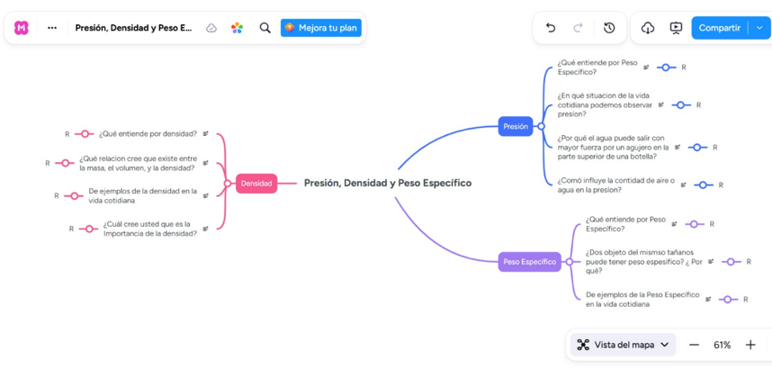
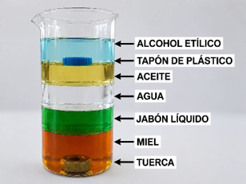
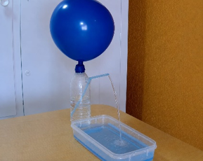
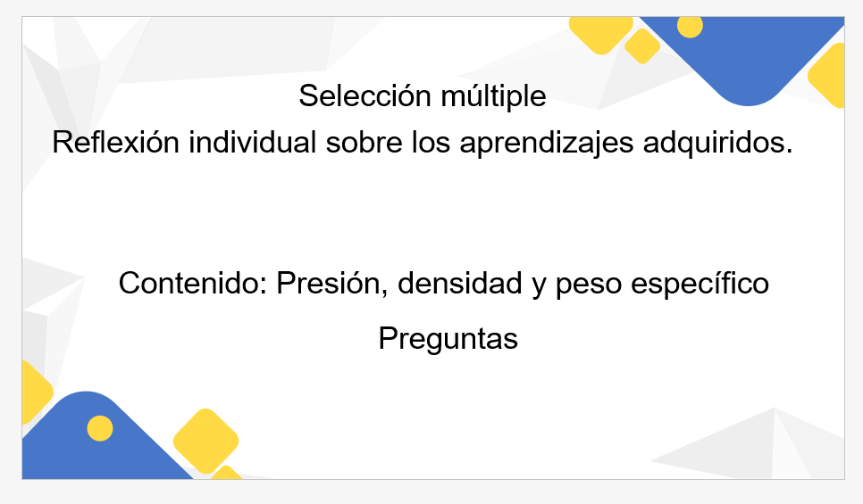

1
1. Tema de la unidad didáctica
Unidad VII: Fuerza
Contenido: Presión, densidad y peso específico
Título de la unidad: Comprendiendo la presión, la densidad y el peso específico mediante la experimentación.
2
Justificación
La presente unidad didáctica, correspondiente a la Unidad VII: Fuerza, aborda el contenido de Presión, densidad y peso específico, los cuales son importantes para que los estudiantes comprendan y expliquen fenómenos físicos presente en su entorno y en situaciones de la vida cotidiana. El aprendizaje de este contenido permite relacionar los conceptos científicos con fenómeno observables, como el comportamiento de diferentes sustancia y objeto y los efectos de la presión en los líquidos.
Para favorecer la comprensión de este contenido se ha seleccionado el Aprendizaje Basado en Problemas (ABP) como estrategia didáctica, debido a que permite partir de situaciones problemáticas cercana a los estudiantes y promover su participación activa en la construcción de sus aprendizajes. A través de esta estrategia, los estudiantes podrán analizar el problema, recuperar sus conocimientos previos, formular hipótesis o posibles explicaciones, buscar evidencias mediante la experimentación, analizar los resultados y construir conclusiones que les permitan dar respuesta al problema planteado.
La experimentación se utilizará como recurso didáctico principal, ya que permitirá a los estudiantes observar directamente los fenómenos relacionados con la densidad, el peso específico y la presión. Mediante los dos experimentos propuestos, los estudiantes podrán contrastar sus hipótesis con los resultados obtenidos y relacionar la experiencia práctica con los conceptos científicos estudiados.
Por lo tanto, la combinación del Aprendizaje Basado en Problemas y la experimentación resulta pertinente para el desarrollo de esta unidad, Por qué favorece un aprendizaje activo, significativo y basado en evidencias, permitiendo que los estudiantes no se limiten a memorizar conceptos, sino que los comprendan, los analicen y los apliquen para explicar fenómenos de su entorno y resolver situaciones problemáticas.
3
Objetivos de aprendizaje
Objetivo general
Comprender los conceptos de presión, densidad y peso específico mediante el Aprendizaje Basado en Problemas y la experimentación, relacionándolos con fenómenos.
Objetivo específico
· Identificar los conceptos fundamentales de presión, densidad y peso específico.
· Analizar situaciones problemáticas relacionadas con la presión, la densidad y el peso específico.
· Relacionar los resultados obtenidos mediante la experimentación con los conceptos científicos estudiados.
· Explicar fenómenos relacionados con la presión, la densidad y el peso específico a partir de las evidencias obtenidas durante la experimentación.
4
Contenidos
Contenidos conceptuales
· Presión, densidad y peso específico.
· Relación entre masa, volumen y densidad.
· Relación entre peso, volumen y peso específico.
Contenidos procedimentales
· Análisis de situaciones problemáticas.
· Formulación de hipótesis o posibles explicaciones.
· Realización de experimentos, observación y registro de resultado.
· Análisis interpretación de los resultados.
· Comparación de las hipótesis con las evidencias obtenidas.
· Elaboración de conclusiones.
Contenidos actitudinales
· Participación activa en las actividades.
· Responsabilidad en el trabajo grupal.
· Interés por la experimentación.
· Uso adecuado de los materiales.
· Respeto por las ideas y opiniones de los compañeros.
5
Competencias o capacidades a desarrollar
Resolución de problema: analiza situaciones relacionadas con la presión, la densidad y el peso específico y propone explicaciones fundamentadas.
Pensamiento crítico: compara las hipótesis planteadas con los resultados obtenidos durante la experimentación.
Observación científica: observa y registra los fenómenos producidos durante las experiencias.
Comunicación: expresa de manera clara las observaciones, resultados y conclusiones.
Trabajo colaborativo: participa responsablemente en las actividades grupales.
Aplicación de conocimientos: relación a los contenidos estudiados con fenómenos de la vida cotidiana.
6
Estrategia didáctica
Aprendizaje Basado en Problemas (ABP)
Se utilizará el Aprendizaje Basado en Problemas (ABP) como estrategia didáctica para el desarrollo de la unidad.
El proceso partirá de una situación problemática relacionada con la presión, la densidad y el peso específico. Los estudiantes analizarán el problema, recuperarán sus conocimientos previos, formularán hipótesis o posibles explicaciones, realizarán experimentos para obtener evidencias, analizarán los resultados, comprobarán sus hipótesis y elaborarán una conclusión que permita responder al problema planteado.
La experimentación se empleará como recurso didáctico para obtener evidencias que permitan a los estudiantes comprender y explicar los fenómenos estudiados.
7
.Actividades
Actividades de inicio
· Presentación de una situación problemática relacionada con la presión, la densidad y el peso específico.
· Recuperación de los conocimientos previos mediante preguntas generadoras.

https://mm.tt/map/4096075744?t=5TSnGco6mL
· Análisis inicial del problema.
· Formulación de hipótesis o posibles explicaciones por parte de los estudiantes.
Problema orientador
¿Cómo podemos explicar, mediante la experimentación, el comportamiento de diferentes sustancias y objetos en relación con la densidad y el peso específico, y Cómo se manifiesta la presión en un líquido?
8
Actividades de desarrollo
Actividad 1. Análisis del problema
Los estudiantes, organizados en grupos, analiza la situación problemática, identifican lo que conocen y plantean posibles explicaciones sobre los fenómenos que se estudiarán.
Actividad 2. Experimento sobre densidad y peso específico
Materiales:
· 
Vaso transparente.
Miel.
Jabón líquido.
Agua.
Aceite.
Alcohol etílico.
Tuercas.
Tapón de plástico.
Los estudiantes realizarán el experimento, observan el comportamiento, los diferentes líquidos y objetos, registran los resultados y los relacionan con los conceptos de densidad y peso específico.
Actividad 3. Experimento sobre presión
Materiales:

· Botella plástica.
· Agua.
· Globo.
· Pajilla.
· Silicón.
· Recipiente
Los estudiantes realizarán el montaje experimental, observan el comportamiento del agua y analizan el fenómeno para relacionarlo con el concepto de presión.
Actividad 4. Análisis de resultados
Los estudiantes comparan los resultados obtenidos con las hipótesis planteadas inicialmente, identifican si esta se confirma o deben modificarse y construyen explicaciones a partir de las evidencias experimentales.
Actividad 5. Resolución del problema
Cada grupo elabora una respuesta al problema orientador utilizando los resultados obtenidos durante los experimentos y los conceptos estudiados.
9
Actividades de cierre
· Consolidación de los resultados obtenidos por cada grupo.
· Comprobación y discusión de las hipótesis planteadas.
· Elaboración de conclusiones sobre presión, densidad y peso específico.
· Relación de los contenidos con situaciones de la vida cotidiana.
· Reflexión individual sobre los aprendizajes adquirido

https://caleromirandayanethe-tech.github.io/Unidad-Didactica/
10
Recurso didácticos
Recurso principal: Experimentación
La experimentación será el recurso didáctico principal de la unidad integrada al desarrollo del Aprendizaje Basado en Problemas.
Experimento 1: Densidad y peso específico
Vaso transparente. Miel.
Jabón líquido.
Agua.
Aceite.
Alcohol etílico.
Tuercas.
Tapón de plástico.
Experimento 2: Presión
Botella plástica.
Agua.
Globo.
Pajilla.
Silicón.
Recursos complementarios
Pizarra
Marcadores
Cuadernos.
Hojas de trabajo.
Lápices.
11
Evaluación
La evaluación será un proceso continuo durante el desarrollo de la unidad, considerando los conocimientos previos, el proceso de aprendizaje los resultados alcanzados por los estudiantes.
Evaluación diagnóstica
Se realizará al inicio de la unidad mediante preguntas generadoras para identificar los conocimientos previos de los estudiantes sobre presión, densidad y peso específico.
Evaluación formativa
Se desarrollará durante las actividades mediante la observación de la participación, la formulación de hipótesis, el desarrollo de los experimentos, el registro y análisis de resultados y la resolución del problema planteado.
Evaluación sumativa
Se realizará al finalizar la unidad, valorando la capacidad de los estudiantes para explicar los fenómenos estudiados y resolver el problema planteado utilizando los conceptos de presión, densidad y peso específico.
12
Criterios de evaluación
· Identifica los conceptos de presión, densidad y peso específico.
· Fórmula hipótesis relacionadas con el problema planteado.
· Participa activamente en las actividades experimentales.
· Registro y analiza los resultados obtenidos.
· Relaciona las actividades experimentales con los conceptos científicos.
· Explica los fenómenos observados de manera fundamentada.
· Resuelve el problema planteado.
· Comunica sus conclusiones de manera clara.
· Utiliza responsablemente los materiales.
13
Instrumentos de evaluación
Primer momento
Lista de cotejo
Objetivo: identificar saberes previos e ideas alternativas sobre presión, densidad y peso específico.
Unidad: VII Fuerza
Contenido: Presión, densidad y peso específico.
Nombre del estudiante:
Grado/Grupo:
Fecha:
| Criterio | SI | NO |
Observaciones |
| Participa activamente en la lluvia de ideas. | |||
| Expresa sus conocimientos previos acerca del tema. | |||
| Comprende ciertos conceptos teóricos y como se da en la vida cotidiana la presión, densidad y peso específico. | |||
| Se involucra en la organización de los equipos de trabajo. |
Segundo momento
Hoja de registro de la actividad experimental
Experimento 1: De densidad y peso específico.
Unidad: VII Fuerza
Contenido: Presión, densidad y peso específico
Nombre del estudiante o equipo:
Fecha:
Objetivo: Observar el comportamiento de diferentes líquidos y objetos para relacionarlo con los conceptos de densidad y peso específico.
Materiales: Vaso transparente, miel, jabón líquido, agua, aceite, alcohol etílico, tuercas, tapón de plástico.
Procedimiento
| Pasos | Descripción |
| 1 | |
| 2 | |
| 3 | |
| 4 | |
| 5 |
Registro de datos
| Orden de vertido | Líquido | ¿Qué tipo de mezcla observaste homogénea o heterogénea según la densidad de los líquidos? |
| 1 | ||
| 2 | ||
| 3 | ||
| 4 | ||
| 5 |
Comportamiento de los objetos.
| Objeto | ¿Flota o se hunde? | ¿En qué líquido se posiciona cada objeto? | Explicación |
| Tuerca | |||
| Tapón de plástico |
Análisis de resultados
| Interrogantes | Respuestas |
| ¿Qué líquido tiene mayor densidad? | |
| ¿Qué líquido tiene menor densidad? | |
| ¿A qué se debe que la tuerca se hunde? | |
| ¿Argumente por qué el tapón flota en ciertos líquidos? | |
| ¿Cómo influyen la densidad y el peso específico en la posición en que quedó cada objeto? | |
| ¿Mediante el experimento se cumplió la hipótesis planteada? Explique. |
Conclusiones
| Aspectos | Conclusiones |
| ¿Qué conocimientos adquiriste sobre la densidad? | |
| ¿Qué aprendiste sobre peso específico? | |
| ¿Comprendió cómo se relacionan los conceptos teóricos con la práctica? |
Experimento 2: De presión
Objetivo: Analizar los fenómenos de presión en un líquido, para relacionarlo con el concepto científico.
Materiales: botella plástica, agua, globo, pajilla, silicón, recipiente.
Procedimiento
| Pasos | Descripción |
| 1 | |
| 2 | |
| 3 | |
| 4 | |
| 5 |
Registro de datos
| Aspecto observado | Descripción |
| ¿Qué sucede al presionar la botella? | |
| ¿Qué ocurre con el agua que se encuentra dentro de la botella? | |
| ¿Qué pasa al liberar la presión? ¿Y cómo influye el globo para liberar el agua por la pajilla? |
Análisis del resultado
| Interrogantes | Respuestas |
| ¿Qué ocurre con la presión al liberar el aire de globo? | |
| ¿Cómo se relaciona la presión con la profundidad? | |
| ¿Por qué el agua sale con más fuerza cuando el globo contiene más aire? | |
| ¿Se corroboró la hipótesis planteada mediante el experimento? |
Conclusiones
| Aspectos | Conclusión |
| ¿Cómo este experimento mejoró tu aprendizaje sobre presión? | |
| ¿Cómo te ayudó a relacionar la teoría con la práctica? | |
| ¿Que aplicaciones tiene en la vida cotidiana? |
Lista de cotejo para la evaluación del trabajo experimental
Unidad: VII Fuerza
Contenido: Presión densidad y peso específico.
Nombre del estudiante o equipo:
Fecha:
Objetivo: Analizar el grado de comprensión de los alumnos acerca de presión, densidad y peso específico, mediante la realización de los experimentos, partiendo de la observación y respuestas proporcionadas por cada uno de los estudiantes.
| Criterios | SI | NO | Observaciones |
| Participa de manera activa y sigue las instrucciones del procedimiento experimental. | |||
| Utiliza los materiales de forma adecuada y segura. | |||
| Se involucra y observa con atención cada uno de los pasos del procedimiento. | |||
| Registra en la hoja el comportamiento de cada uno de los líquidos y objetos. | |||
| Trabaja de manera colaborativa con su equipo. | |||
| Manipula los materiales con responsabilidad y de manera ordenada. | |||
| Formula conclusiones a partir de lo observado. |
Tercer momento
Rúbrica para los resultados de cierre de la unidad
Unidad: VII: Fuerza
Contenido: Presión, densidad y peso específico
Nombre del estudiante o equipo:
Fecha:
Objetivo: Evaluar la presentación, análisis y conclusiones de los resultados experimentales sobre presión, densidad y peso específico.
| Criterio | 5- Destacado | 4- Satisfactorio | 3- En proceso | 2- Deficiente |
| Organización de la presentación | La presentación está excelente organizada y estructurada, y se identifica claramente el problema. | La presentación está bien organizada y se comprende el problema. | La organización, no se encuentra bien estructurada, y presentan algunos aspectos del problema. | La presentación es confusa, desordenada y complicado de comprender. |
| Descripción del procedimiento experimental | Describe con orden y precisión cada uno de los pasos seguidos. | Describe los pasos de manera adecuada, de ambos experimentos. | Menciona ciertos pasos, pero no el orden adecuado. | No describe el procedimiento o lo hace de manera incorrecta. |
| Registro y presentación de resultados | Los resultados están completos, bien registrados y presentados de forma clara y organizada. | Los resultados están registrados de manera correcta, con detalles establecidos. | Los datos no son claros y no son presentados con el orden correcto. | Los resultados están incompletos, con un orden inadecuado y confusos. |
| Análisis e interpretación de datos | Analiza e interpreta perfectamente cada uno de los datos de ambos experimentos identificando relaciones y patrones entre los resultados. | Analiza e interpreta los datos de manera adecuada. | El análisis es superficial, con interpretaciones parciales o incompletas | No analiza, ni interpreta los datos; solo los enumera o los presenta sin explicación. |
| Relación entre resultados e hipótesis | Explica claramente como los resultados confirman de forma clara y precisa la hipótesis planteada. | Relaciona los resultados dando salida a la hipótesis planteada. | Intenta relacionar resultados con la hipótesis planteada, pero de manera confusa. | No establece relación entre resultados e hipótesis o la relación es incorrecta. |
| Resolución del problema orientador | Resuelve el problema orientador de manera clara fundamentada, creativa y relaciona con los resultados experimentales | Resuelve el problema de manera precisa. | La resolución es incompleta, poco clara o parcialmente incorrecta. | No resuelve el problema o lo hace de manera incorrecta sin fundamentación. |
| Comunicación oral y respuestas a preguntas. | Expone con claridad, fluidez, seguridad, expresando su conocimiento. | Expone de manera clara y responde preguntas adecuadamente, con algunas dudas. | La exposición es poca fluida; responde preguntas de forma incompleta o insegura. | La exposición es confusa; no responde preguntas o lo hace de manera incorrecta. |
| Participación y trabajo colaborativo | Participa activamente durante toda la actividad; colabora de manera responsable, respeta ideas, contribuye al trabajo del equipo. | Participa y colabora de manera adecuada; respeta a sus compañeros y cumple con su rol en el equipo. | Participa poco o su colaboración es limitada; tiene dificultades para trabajar en equipo. | No participa o no colabora con el equipo; no respeta ideas ajenas o interfiere con el trabajo. |
14
Temporización
La unidad didáctica se desarrollará en 6 secciones de 45 minutos cada una, para un total estimado de 4 horas y 30 minutos. La distribución de las actividades se realizará de manera progresiva, siguiendo las etapas del Aprendizaje Basado en Problemas: planteamiento del problema, recuperación de conocimientos previos, formulación de hipótesis, experimentación, análisis de resultados, comprobación de hipótesis, resolución de problema y elaboración de conclusión.
| Sesión | Actividades principales | Tiempo |
| 1 | Presentación de la situación problemática, recuperación de conocimientos previo y formulación de hipótesis. | 45 minutos |
| 2 | Análisis del problema, organización de los grupos y orientación para el desarrollo de las actividades experimentales. | 45 minutos |
| 3 | Realización del experimento sobre densidad y peso específico, registro y análisis de los resultados obtenidos. | 45 minutos |
| 4 | Realización del experimento sobre presión, registro y análisis de los resultados obtenidos. | 45 minutos |
| 5 | Comprobación de los resultados experimentales con las hipótesis planteada y resolución del problema. | 45 minutos |
| 6 | Socialización de los resultados, elaboración de conclusiones y evaluación de los aprendizajes. | 45 minutos |
15
Atención a la diversidad
Se atenderán las diferentes necesidades y ritmos de aprendizaje mediante:
Formación de grupos heterogéneos para favorecer la colaboración entre estudiantes.
Uso de materiales concretos y manipulativos durante las actividades experimentales.
Presentación de instrucciones clara y sencilla para facilitar la realización de los experimentos.
Utilización de pregunta orientadoras para apoyar a los estudiantes que presenten dificultades de comprensión.
Asignación de diferentes roles dentro de los grupos, favoreciendo la participación de todos.
Adecuación del nivel de complejidad de las actividades y preguntas de acuerdo con las necesidades y ritmos de aprendizaje de los estudiantes.
Acompañamiento y apoyo durante el desarrollo de las actividades.